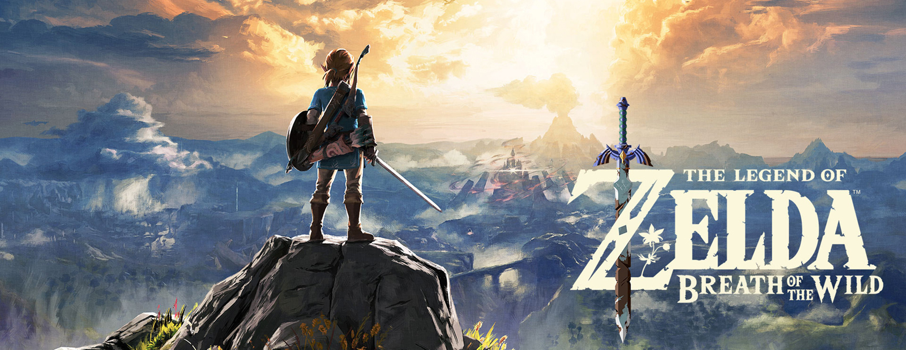
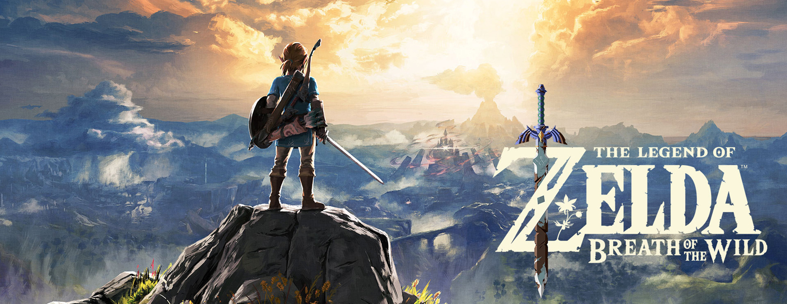
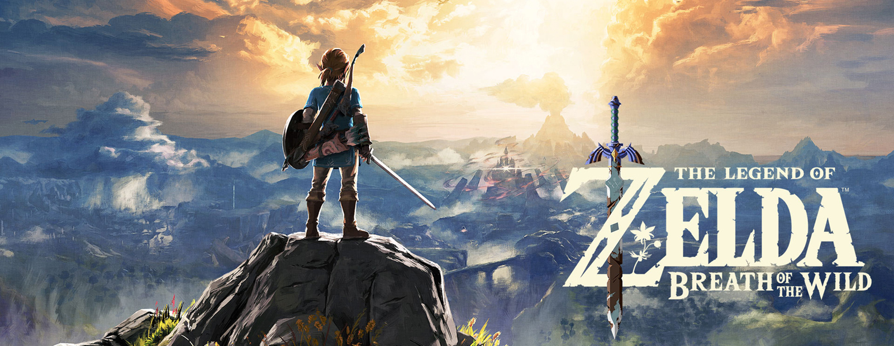
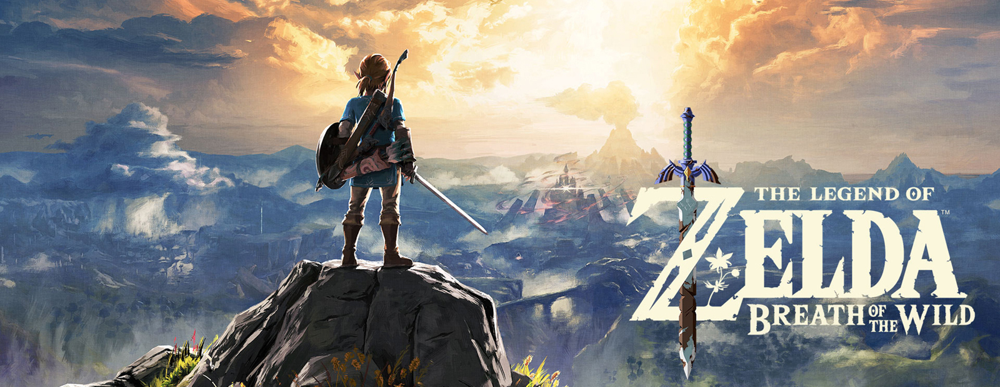

Welcome to The Legend of Zelda Informative Deep Dive. We are here to give some insight into The Legend of Zelda franchise and how they have continued to evolve over the years. By proxy, we hope this presentation will show how Nintendo has too adapted as a company and continues to innovate their games' formula in ways few other developers have.
When selecting key components to represent innovation, we decided that there needed to be an address to the limitations Nintendo had to combat in order to push forward. Hardware limitations address these problems as Nintendo would have to make games that utilize their available technology to the best of its ability while still able to captivate audiences worldwide.

From simple items like health potions to complicated powers like gravity controlled objects for puzzle solving; The Legend of Zelda has come a long way in terms of game mechanics. Nintendo has found a way to keep players entertained by using their consoles features to their advantage; Like Nintendo, Zelda has not been afraid to innovate upon the formula while also not straying too far from the core mechanics players have come to love. With each game the franchise truly feels like an innovation over the prior and continues to captive thier audience.
Alongside hardware limitations there was the matter of software and how game engines enabled Nintendo to experiment with the visual design of its world. While Zelda holds consistent themes within its design, The Legend of Zelda is also known for having very different visual styles and narratives connecting the overarching universe. We hope to highlight some of these core visual style transformations of the franchise and highlight what benefits they have brought.


The Legend of Zelda was released on February 21, 1986. The game
was released on the Nintendo Entertainment System.
The game focuses the quest of our character, Link who is tasked with
finding eight fragments of The Triforce of Wisdom. Follow Link as
he travels the lands of Hyrule to save the kingdom from the evil
clutches of Ganon and his army of darkness.
We chose this game as it being the first game of the
franchise meant that it would lay the groundwork for all
games to come after. The original Zelda established many of
the elements of subsequent games, including dungeons, puzzle
solving, item gathering and returning characters.
It also displays the impressive innovation of Nintendo
as they had to work around the NES visual limitations.

The Legend of Zelda: Ocarina of Time was released on November 21, 1998.
The game was released on the Nintendo 64.
In this game, a reincarnation of Link is raised in Kokiri Village
by an ancient tree known as The Great Deku Tree. This elder tree is
cursed by Ganondorf a mysterious man vying for power in the lands
of Hyrule. Link defeats the curse of the tree but is unable to save
it from dying. Before passing, the tree tells Link the story of
Ganondorf (Ganon’s reincarnation) and the Triforce; Link is instructed
to find Princess Zelda and stop Ganondorf’s conquest for power
before its too late.
We chose this game because it was a technological marvel for Nintendo
as it was The Legend of Zelda’s first entry into 3D. It introduced many
of the mechanics new 3D Zelda games use, and set up many of the factions/essential
characters who would play an important role going forward. Most notably, this
game is responsible for the multiple timelines that exist in the Zelda universe
and the stories of the other game’s narratives.

The Legend of Zelda: Skyward Sword was released on November 18
to November 24 2011 depending on the region. The game was released on the Wii.
‘After a tumultuous ceremony, Link and his childhood friend Zelda get
caught in a mysterious tornado while flying their Loftwings, with Zelda
disappearing and Link being thrust aside. It is eventually found that
Link must undergo a quest to the mysterious surface to rescue Zelda
from the clutches of an ancient evil, all the while wielding and improving
a mystical sword granted to him from the skies by the goddess Hylia.’
We chose this game because it embodied a new generation of consoles and
game design for Nintendo. It was the first Zelda game to implement motion
controls (a mechanic involving physical movement of the controller to
impact in game actions) albeit the controls have not aged well. However,
it did mark a new point in Nintendo’s desire to innovate the formula by
more directly involving the player. This in turn strengthens the LINK
between the player and character. The game also plays a significant role
in the universes' story as Skyward Sword is the first chronological game
of the franchise, and explains much of the lore behind the game’s story.

The Legend of Zelda: Breath of the Wild was released on March
3, 2017. The game was released on the Wii U and the Nintendo Switch simultaneously.
‘Link awakens from a deep slumber and a mysterious voice guides him
to discover what has become of the ruined Kingdom of Hyrule Kingdom.
Link learns from King Rhoam that 100 years prior, a great evil known
as the Calamity Ganon rose up and laid waste to the kingdom and its
people. Unable to be defeated, it was sealed within Hyrule Castle,
while the ruins of the land were ravaged by nature over time. Although
trapped, the Calamity Ganon has grown in power, and Link must defeat
it before it breaks free once more and destroys the world. As Link
sets off on his quest to defeat Calamity Ganon, he is asked to investigate
the fate of the Divine Beasts and their former Champions. His ultimate
goal, however, remains to reach the Calamity Ganon and free the trapped
Zelda before the whole world is laid to waste.’
We chose this game because it set a new era for Zelda, where all timelines
converged to a singularity. The reset created a fresh slate for Nintendo to
work with which allowed for a very different kind of Zelda. This game added a
lot of new mechanics for the Zelda franchise (many utilized motion controls as
well but in a far less frustrating manner) It was also the flagship game for the
Nintendo Switch, the newest line of consoles.